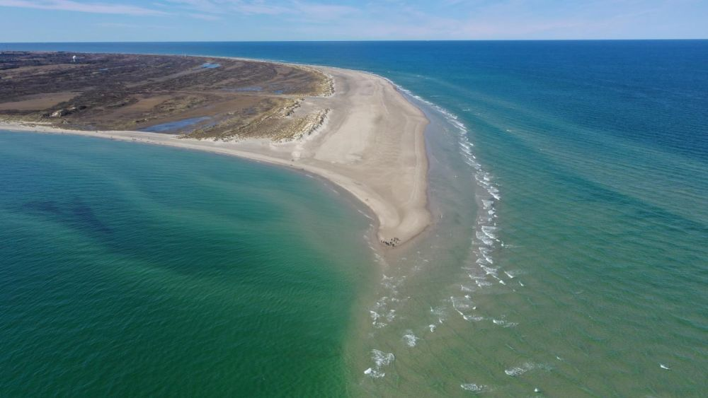

Descoperă Skagen - O călătorie în Danemarca
Skagen este un oraș pitoresc situat în vârful peninsulei Jutland, oferind o varietate de atracții interesante pentru vizitatori:
-

Plaja Grenen din Skagen - Întâlnirea a două mări
Explorați locul unde Marea Nordului și Marea Baltică se întâlnesc, oferind o priveliște spectaculoasă.
-

Muzeul Skagen din Skagen - Artă și istorie
Admirați lucrările artiștilor din Mișcarea Skagen, care s-au inspirat din peisajele locale, și aflați despre istoria orașului.
-

Råbjerg Mile din Skagen - Dune de nisip
Vizitați cea mai mare dune de nisip din Danemarca și bucurați-vă de peisaje impresionante.
-

Portul din Skagen - Atmosferă maritimă
Relaxați-vă în portul pitoresc al orașului Skagen și bucurați-vă de vedere.
-

Casa Michael și Anna Ancher din Skagen - Artă și casă muzeu
Vizitați casa artiștilor Michael și Anna Ancher și aflați mai multe despre viața și lucrările lor.
Concluzii
Skagen oferă o experiență unică prin peisajele sale de coastă, arta locală și istoria captivantă.